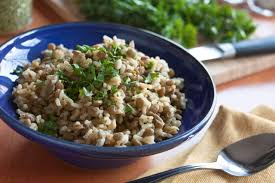

Rice and Lentils using a Rice Cooker

Description
Super simple, nutritious and hands-off recipe
Ingredients
- 2 cups of white rice
- 1 cup brown lentils
- 1 cup pearled barley
- 1/4 cup olive oil
- 2 tablespoons minced garlic
- 2 tablespoons chicken stock concentrate
- water as needed
Steps
- Rinse rice, lentils, and barley
- Add all ingredients except water
- Pour water over to reach 4 1/2 cup mark on the rice cooker
- Press start and let the rice cooker cook until rice and lentils are tender, about 30 minutes
Original Recipe: Rice and Lentils from a Rice Cooker from allrecipes.com
Home ● Lasagna Recipe ● Peanut Butter Noodles Recipe